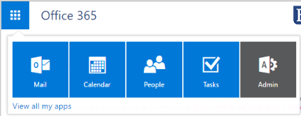
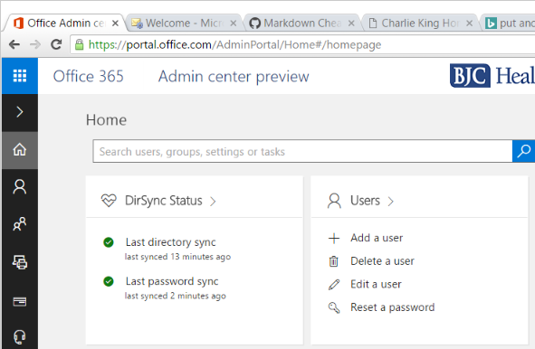
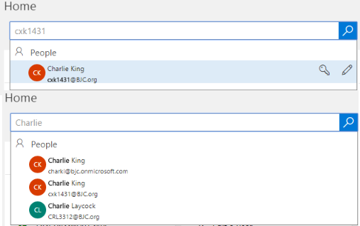
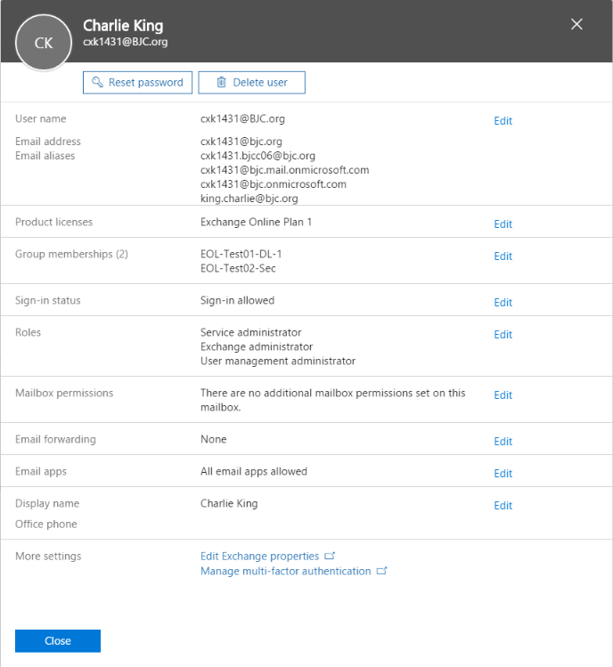
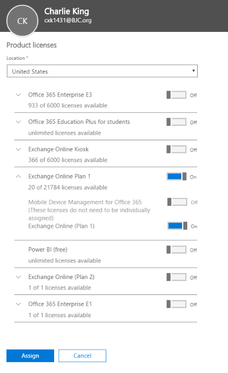
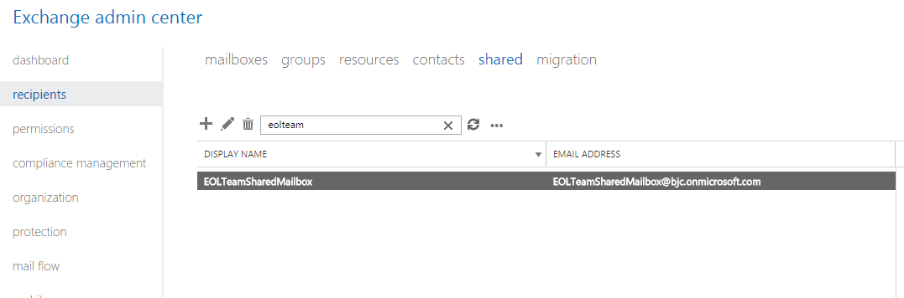

Details on accessing and explanation of the differences between the current (May 2016) versions of the O365 Admin center and Exchange Online Admin center.
This console contains details on User licenses and has a unified search bar in case you're having trouble locating a mailbox.
To access the O365 Admin Center, select the 'Admin' tile from the tile menu. If you do not have an admin tile, it may be the case that you are only an Exchange admin. If that is the case skip to here

The Admin center was updated in Spring 2016 to a slightly new look, so if you do a typical web search for a method of doing something, you may find an older look. There are a few essential tasks the Admin Center allows you to do that I will mention here
The main thing on the home screen is the Unified Search bar. If you are unsure if something exists in the environment or you're looking for a user, or you want to check a license type, use this bar to search. If this search doesn't find it, it's not in the environment (or it's misspelled).

Another important piece of the home screen is the Dirsync Status. Under no circumstances should this ever be anything but healthy assuming the data center is functioning properly. The directory sync uploads changes made in Active Directory (DisplayName changes, for one) to the cloud every ~30 minutes. Password syncs happen almost all the time, any time a user changes a password a password sync occurs, but only for that user.
The "Users" section right next to that is not something you should ever need to mess with, since all User accounts are synced from Active Directory.
Again, the search function on the home screen is very nice. It allows you to search on email address, firstname, lastname, displayname, Alias, and will almost always find what you're looking for assuming everything is spelled correctly and it exists in the environment.

When you find a user you're looking for, you can select their name and get a lot more info. This includes the list of email addresses for the user, groups they belong to, Sign-in Status (which will only be blocked if the user has recently tried the wrong password too many times), if someone else has access to their account, if they have a forwarder in place, and their admin roles. Most importantly though, is their license type in the case of user accounts.

Product Licenses is the area where you should check. There is one very common issue with licenses assignment:
If a user is reporting they cannot log in to the Outlook client but they can access OWA, the Product Licenses section is the first place to check. If they have "Exchange Online Kiosk", then they will only be able log in to OWA, so the solution is to give the user an "Office 365 Enterprise E3" license (See below for details), or an "Exchange Online Plan 1" license. At the time of writing this documentation, the choice between the two is meaningless, as they both provide the same thing.

Always turn off everything except "Exchange Online" (except the mobile device management one, which can't be unchecked for some reason) when you are assigning a license.
The Exchange Online Admin Center is where all mail-related activities are managed. It contains the list of all mailboxes, mail compliance rules, admin rules, mailbox holds, message tracing tools, and a number of other features of Exchange that probably won't be ever touched.
If you skipped to this section because you Don't have the ability to access the O365 Admin Center, the direct link to the admin center is:
https://outlook.office365.com/ecp/
The Recipient Section has the list of all types of mailboxes and contact objects. Normally if you are looking for details on a user's mailbox, you search for it under "mailboxes". For Distribution Lists and Security Groups, they're under "groups". Conference Rooms and other Resources (like Equipment) are under "resources". All other State Agency users will appear under "contacts". Finally, "shared" contains all shared mailboxes.
Note: Always keep in mind that users often do not know what they're talking about when they give you the name and type of a mailbox and you will probably have to check all of these (excluding contacts and migration) to find the address they're referring to. Never assume the mailbox doesn't exist just because you couldn't find it on the first search attempt.

This section is for user mailboxes.
This is where you check who the owner of a Distribution Group is and who is a member of the list
This is where you go to set up booking delegates for rooms,
This is where you go to check if someone has FullAccess and SendAs rights to the mailbox
This section was used during the migration from CES and likely will no longer be used.
Under Mail Flow -> Message Trace you will find the message trace tool. To run a basic message trace just select the options you want and add a Sender, Recipient, or both and hit "search"
You will see something like the output above. Each line item can be selected for more details. If it's something simple, the details may give you a recommendation on how to resolve the issue.